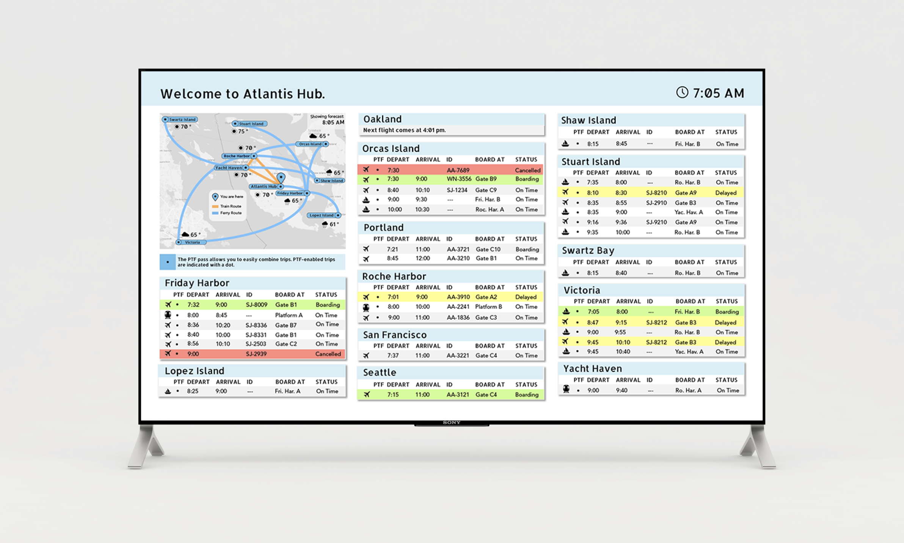
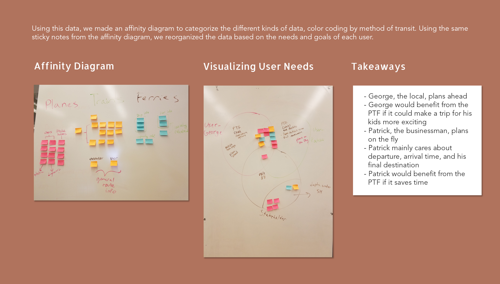
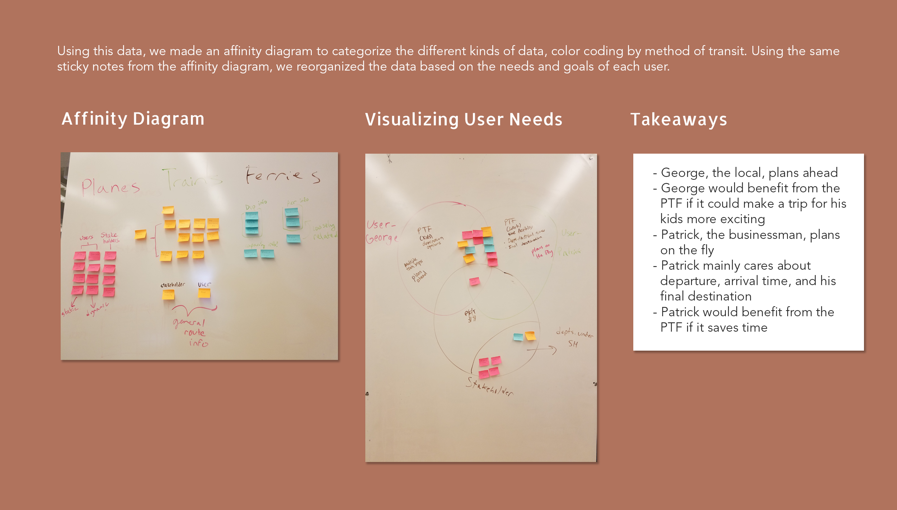
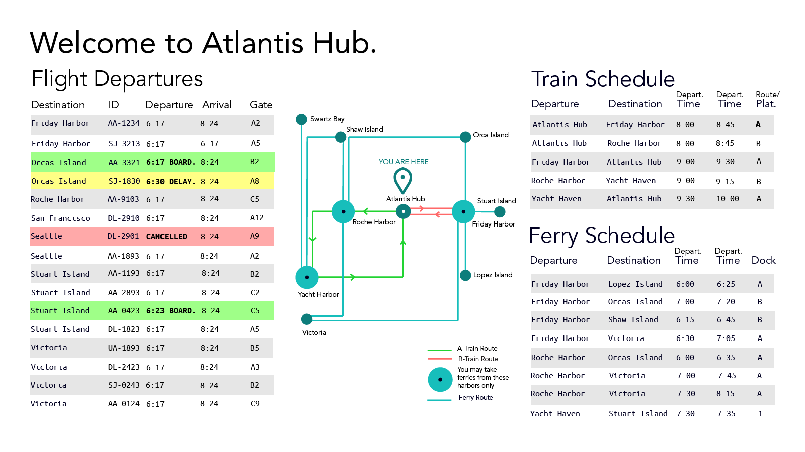
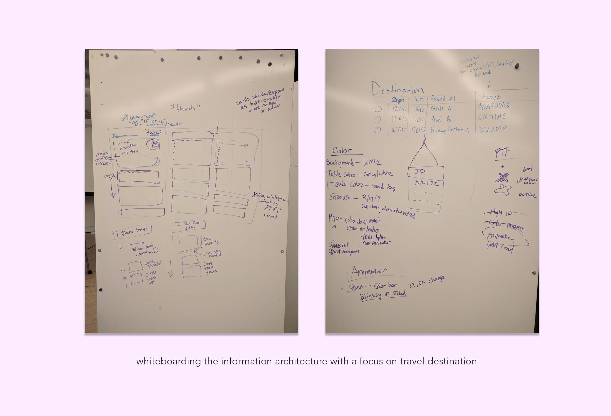

introduction
Atlantis Transportation Hub
This was the very first UX design project that I worked on. I worked on this project in my Interaction Design Studio class with two other teammates. The objective for this project was to create an interactive display for a fictional transportation hub in San Juan Islands that had arrivals and departures involving trains, planes, and ferries. Due to the busy nature of this hub, information on arriving and departing trips had to be organized in a way that was easy to understand and read. We also had to promote the PTF pass, a pass that would allow travelers to make transfers between different transportation modes.
MY ROLE
UX Designer
TEAM
Frank Teng and Bobbie Soques
DURATION
3 weeks; Sept-Oct 2017
SKILLS
Wireframing, Prototyping
TOOLS
Illustrator
final deliverable
Evaluating User Needs
 

Designing the Information Architecture
My team decided on a general information architecture organized by transportation mode. We then split off and created our own designs. This was my first iteration.
My team then realized that this organization hierarchy was not intuitive; when travelers arrive at the transportation hub, their main concern is getting to a destination. We whiteboarded the hierarchy as a team and I created the mockup in Illustrator.
